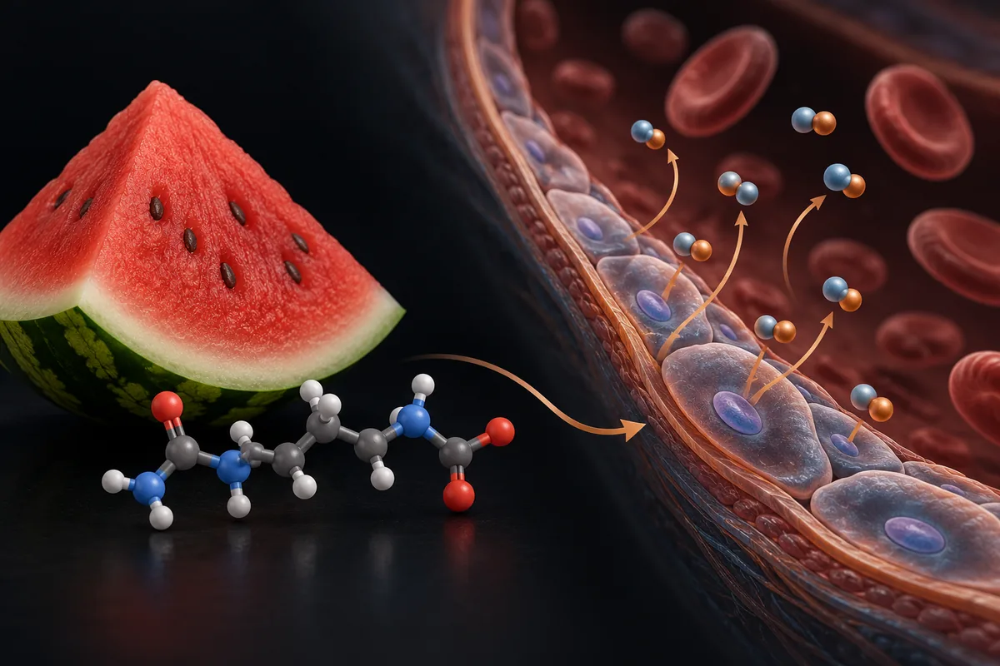

L-citrulina (inclui citrulina malato)
O único ensaio de L-citrulina sozinha em disfunção erétil tem 24 homens, usou 1,5 g por dia e não mediu o tamanho do pênis.

Experimentelles Material. Lesen Sie, bevor Sie irgendetwas von hier verwenden.
Nichts auf dieser Seite ist eine medizinische Empfehlung, eine Verordnung oder ein Behandlungsplan. Es ist eine organisierte Übersetzung von Protokollen, die in Forschungs-Communities kursieren, und, wo vorhanden, dessen, was publizierte Studien getestet haben. Beides ist unterschiedlich gekennzeichnet — und nicht gleichwertig.
Die meisten Wirkstoffe hier haben keine Zulassung der FDA für die Anwendung am Menschen. Viele werden mit dem Etikett „nur für Forschungszwecke“ verkauft, was bedeutet, dass sie keine Kontrolle auf Reinheit, Sterilität oder Dosierung für den Konsum durch Menschen durchlaufen haben. Eine von der Community beschriebene Dosis ist keine validierte Dosis: Sie ist das, was jemand berichtet hat, getan zu haben.
Sprechen Sie mit einer approbierten Fachkraft des Gesundheitswesens, bevor Sie einen dieser Wirkstoffe in Betracht ziehen. Wenn Sie bereits einen verwenden und etwas Unerwartetes spüren, suchen Sie ärztliche Hilfe — warten Sie nicht auf die nächste Routineuntersuchung.
Zusammenfassung
A L-citrulina é um aminoácido que o próprio corpo fabrica e que vira arginina e, depois, óxido nítrico. Em disfunção erétil, o PubMed devolve 42 artigos e só um marcado como ensaio randomizado ou meta-análise, e ele testa uma mistura, não a citrulina sozinha. O estudo de 2011 citado nos vídeos existe: 24 homens com disfunção leve, 1,5 g por dia, metade melhorou a dureza da ereção, contra 8,3% com placebo. Ele não mediu centímetros. No treino, as meta-análises acham efeito pequeno ou nenhum. No Brasil, a L-citrulina não consta da lista de constituintes autorizados em suplemento alimentar.
Warum diese Seite existiert
A L-citrulina aparece descrita em vídeos curtos sobre saúde masculina que vi publicados na internet, como uma "tadalafila natural": um precursor de óxido nítrico que endureceria a ereção, devolveria centímetros "escondidos" pela má circulação, protegeria o pênis da "atrofia" e, na forma de citrulina malato, aumentaria em mais da metade as repetições no treino. Os números vêm com nome de revista e ano, o que dá a eles aparência de coisa conferida.
Eu conferi. Levantei as alegações de 21 vídeos curtos, separei as 29 que são verificáveis e fui atrás de cada estudo citado. Quando o vídeo nomeia uma revista, procurei o artigo; quando dá um número, procurei o número no artigo. Nenhum número desta página veio da fonte secundária do site.
A L-citrulina é um aminoácido não essencial. Segundo a revisão de Allerton e colegas (2018), ela é formada por enzimas dentro das mitocôndrias e aparece em alta concentração na melancia. A citrulina malato é a citrulina combinada com malato e é a forma usada na maior parte dos estudos de treino. Uma revisão crítica de 2021 registra problemas de controle de qualidade: a proporção entre citrulina e malato declarada por alguns fabricantes não batia com o conteúdo.
Este site trata de assunto vizinho também em Muira puama (Ptychopetalum olacoides, marapuama).
O mecanismo existe, mas não é o da tadalafila
A parte bioquímica da alegação se sustenta. A arginina tomada por boca sofre extensa eliminação antes de chegar ao sangue, pela arginase do intestino, como descrevem Schwedhelm e colegas. Segundo a revisão de Allerton e colegas, a citrulina não é retida em quantidade pelo intestino nem pelo fígado, e por isso eleva mais a arginina disponível para a enzima que produz óxido nítrico.
Dois estudos de farmacocinética mediram isso. Schwedhelm e colegas (2008) deram seis esquemas de placebo, citrulina e arginina a 20 voluntários saudáveis, por uma semana cada. A citrulina elevou a arginina no sangue mais do que a própria arginina (P < 0,01). Na dose mais alta, 3 g duas vezes ao dia, o nitrato na urina subiu de 92 para 125 µmol por mmol de creatinina. Mas nenhum esquema melhorou a dilatação da artéria medida pelo método de fluxo. Moinard e colegas (2008) deram doses únicas de 2 a 15 g a 8 homens e viram outro limite: nas doses mais altas, a citrulina se acumulou no sangue e a arginina subiu menos que o esperado, o que os autores atribuem à saturação da conversão no rim.
O que não se sustenta é a frase "mesmo mecanismo da tadalafila". A citrulina é matéria-prima: entra antes da produção de óxido nítrico. A tadalafila é inibidora de uma enzima, a fosfodiesterase tipo 5. O registro do ensaio que hoje compara as duas, NCT07642505, descreve exatamente assim: a citrulina como "suplemento da via do óxido nítrico" e a tadalafila como "inibidor da fosfodiesterase tipo 5". Fornecer matéria-prima não é a mesma coisa que inibir uma enzima.
Wie viel Evidenz es wirklich gibt
Os números abaixo foram levantados por mim em 16 de outubro de 2026, no PubMed e no ClinicalTrials.gov. A consulta de cada linha está ao lado do número, para qualquer pessoa repetir e me contradizer.
| Basis | Suchanfrage | Ergebnis |
|---|---|---|
| PubMed | citrulline | 16.631 artigos |
| PubMed | citrulline[Title/Abstract] AND (supplementation[Title/Abstract] OR oral[Title/Abstract]) | 1.009 artigos |
| PubMed | (citrulline) AND (Randomized Controlled Trial[Publication Type] OR Meta-Analysis[Publication Type]) | 515 artigos |
| PubMed | (citrulline) AND (erectile dysfunction) | 42 artigos |
| PubMed | (citrulline) AND (erectile dysfunction) AND (Randomized Controlled Trial[Publication Type] OR Meta-Analysis[Publication Type]) | 1 artigo |
| PubMed | "citrulline malate" | 79 artigos |
| PubMed | ("citrulline malate") AND (Randomized Controlled Trial[Publication Type] OR Meta-Analysis[Publication Type]) | 41 artigos |
| PubMed | (citrulline[Title/Abstract]) AND (exercise[Title/Abstract] OR performance[Title/Abstract] OR muscle[Title/Abstract]) AND (Meta-Analysis[Publication Type] OR Systematic Review[Publication Type]) | 20 artigos |
| PubMed | (citrulline[Title/Abstract]) AND (blood pressure[Title/Abstract]) AND (Meta-Analysis[Publication Type] OR Systematic Review[Publication Type]) | 5 Artikel |
| ClinicalTrials.gov | intervenção: citrulline | 162 estudos registrados |
| ClinicalTrials.gov | intervenção: (citrulline) AND AREA[Phase]PHASE3 | 11 ensaios de fase 3 |
| ClinicalTrials.gov | intervenção: citrulline AND AREA[Condition]erectile dysfunction | 2 estudos registrados |
| ClinicalTrials.gov | intervenção: citrulline malate | 11 estudos registrados |
Ehrliche Lesart dieser Zahlen
- Quase todo o volume do PubMed não é sobre suplemento. A palavra citrulline também pega a citrulinação de proteínas e os anticorpos anticitrulinados usados no diagnóstico de artrite reumatoide. Restrita a suplementação ou uso oral no título ou resumo, a contagem cai de 16.631 para 1.009.
- Para ereção, o único artigo marcado como ensaio randomizado ou meta-análise não testa a citrulina sozinha. É um estudo de 2015 com uma mistura de extrato de casca de pinheiro, roburinas, arginina e citrulina. O estudo de 2011 citado nos vídeos não recebeu essa marcação no PubMed: ele aparece como "Clinical Trial".
- Registro não é resultado. Dos 2 registros em disfunção erétil, um foi retirado sem nenhum participante e o outro, que compara citrulina, tadalafila e as duas juntas, começou a recrutar em junho de 2026 e não tem resultado.
- Há fase 3 com citrulina, mas não para ereção nem para treino. Os 11 registros de fase 3 são de anemia falciforme, síndrome pós-pólio, distrofia de Duchenne, falência intestinal, cirurgia cardíaca em crianças (citrulina na veia), DPOC, pré-eclâmpsia e sepse.
- Contagem de artigo mede atenção acadêmica, não evidência de desfecho.
Die Studien hinter den Behauptungen
Segundo o PubMed, estes são os trabalhos clínicos concretos por trás do que se diz sobre a L-citrulina e a citrulina malato. Leia o que cada um mediu, e em quantas pessoas.
| Studie | N | Kontext | Was berichtet wurde | Vorbehalt |
|---|---|---|---|---|
| Cormio et al., 2011 Urology 77(1):119-22 · PMID 21195829 | 24 | Homens com disfunção erétil leve (escore de dureza 3), idade média 56,5 anos; placebo por um mês e 1,5 g/dia de citrulina no mês seguinte | Dureza passou de 3 para 4 em 50% com citrulina e em 8,3% com placebo (P < 0,01); relações por mês de 1,37 para 2,3; nenhum evento adverso | Simples-cego; o resumo não descreve sorteio da ordem; um mês; nenhuma medida de comprimento ou circunferência; os próprios autores dizem que é menos eficaz que os inibidores de PDE5 |
| Shirai et al., 2018 Sex Med 6(4):291-296 · PMID 30150102 | 20 inscritos; 6 saíram e 13 concluíram, como o resumo publica | Homens com disfunção apesar de usar inibidor de PDE5 sob demanda; 800 mg/dia de citrulina + 300 mg/dia de trans-resveratrol, cruzado, 1 mês | Escore SHIM 10,96 contra 8,31 no placebo (P < 0,05); escore de dureza 2,56 contra 2,31, sem significância (P = 0,79) | Piloto; mistura com resveratrol, então o efeito não é atribuível só à citrulina |
| Stanislavov e Nikolova, 2003 J Sex Marital Ther 29(3):207-13 · PMID 12851125 | 40 | Homens de 25 a 45 anos sem disfunção orgânica confirmada; arginina (1,7 g/dia) nos 3 meses, extrato de pinheiro a partir do 2º mês | Ereção normal em 5% após o 1º mês, 80% após o 2º, 92,5% após o 3º | Não tem citrulina; sem grupo controle |
| Stanislavov et al., 2008 Int J Impot Res 20(2):173-80 · PMID 17703218 | 50 | Disfunção leve a moderada; aspartato de arginina + extrato de pinheiro, randomizado, duplo-cego, cruzado, 1 mês | "Restaurou a função erétil ao normal"; frequência de relações dobrou | Não tem citrulina; o resumo não traz o 92,5%; um dos autores assina também os outros dois estudos da série |
| Stanislavov e Rohdewald, 2015 Minerva Urol Nefrol 67(1):27-32 · PMID 25664962 | 50 | Disfunção moderada; extrato de pinheiro + roburinas + arginina + citrulina, randomizado, duplo-cego, cruzado, 1 mês | "Restaurou a função erétil ao normal" | Resumo sem números; mistura de quatro ativos |
| Robertson et al., 2020 (Cochrane) Cochrane Database Syst Rev 9(9):CD008294 · PMID 32990945 | 277 em disfunção erétil (3 estudos) | Revisão sistemática do extrato de casca de pinheiro em doenças crônicas | Em disfunção erétil, não se sabe se o extrato melhora o IIEF-5; resultados não agrupados | Certeza "muito baixa" pelo método GRADE, como declarada pela revisão |
| Pérez-Guisado e Jakeman, 2010 J Strength Cond Res 24(5):1215-22 · PMID 20386132 | 41 | Homens; 8 g de citrulina malato em dose única antes de supino; randomizado, duplo-cego, cruzado | +52,92% de repetições na última série; −40% de dor muscular em 24 h e 48 h | O 52,92% é da última série, não da sessão; desconforto no estômago em 14,63% |
| Vårvik et al., 2021 (meta-análise) Int J Sport Nutr Exerc Metab 31(4):350-358 · PMID 34010809 | 137 (8 estudos) | 6–8 g de citrulina malato 40–60 min antes do treino de força | +3 ± 5 repetições (6,4 ± 7,9%); efeito pequeno (SMD 0,196); sem efeito significativo nos membros superiores | Bem abaixo do 52,92% do estudo de 2010 |
| Trexler et al., 2019 (meta-análise) Sports Med 49(5):707-718 · PMID 30895562 | 198 (12 estudos) | Citrulina ≥ 3 g antes de testes de força e potência | Benefício pequeno: SMD 0,20 (IC 95% 0,01–0,39) | Os intervalos de confiança de cada estudo cruzavam a linha de efeito nulo |
| Aguiar e Casonatto, 2022 (meta-análise) J Diet Suppl 19(6):772-790 · PMID 34176406 | 4 estudos | Força em adultos treinados | Sem efeito: SMD 0,13 (−0,21 a 0,46) | Poucos estudos |
| Rhim et al., 2020 (meta-análise) J Sport Health Sci 9(6):553-561 · PMID 33308806 | 206 (13 artigos) | Dor muscular, esforço percebido e lactato | Dor menor em 24 h (p = 0,04); em 48 h, p = 0,25; lactato sem diferença | O resumo descreve redução em 24 h e 48 h, mas o p publicado para 48 h é 0,25; a dose mais usada foi 8 g de citrulina malato |
| Harnden et al., 2023 (meta-análise) J Int Soc Sports Nutr 20(1):2209056 · PMID 37155582 | 158 (9 estudos) | Endurance em adultos jovens | Sem diferença no tempo até a exaustão (SMD 0,03) nem no tempo de prova (SMD −0,07) | É o artigo do JISSN sobre citrulina que localizei; trata a amônia como mecanismo proposto |
| Wang et al., 2026 (meta-análise) Nutrients 18(12):1881 · PMID 42356270 | 644 (30 ECRs) | Citrulina malato e desempenho | Melhora pequena (g = 0,16; p = 0,01); esforço percebido sem diferença | Certeza "de baixa a muito baixa" pelo GRADE, como declarada; dose e momento ideais não estabelecidos |
| Martín-Olmedo et al., 2025 Int J Sport Nutr Exerc Metab 35(2):89-98 · PMID 39662304 | 43 | 5,3 g de citrulina, com ou sem 2,7 g de malato, 45 min antes; randomizado, duplo-cego, cruzado | Nenhuma das formas melhorou força, potência ou repetições | Sessões de volume baixo a moderado |
| Selvaraj et al., 2025 Sci Rep 15(1):33067 · PMID 41006371 | 46 | Homens treinados; arginina + citrulina malato por peso corporal, dose aguda | Sem melhora de desempenho, exceto chegar mais cedo ao pico de potência no teste de Wingate | Dose por quilo, não os 5 g + 3 g dos vídeos |
| Mirenayat et al., 2018 (meta-análise) Curr Hypertens Rep 20(11):98 · PMID 30284051 | 5 intervenções | Pressão arterial | Sem efeito na pressão braquial ou aórtica | Base pequena |
| Luo et al., 2025 (meta-análise) Clin Nutr ESPEN 69:653-664 · PMID 40789388 | 415 (15 ECRs) | Adultos de meia-idade e idosos; citrulina ou melancia | Pressão sistólica −4,02 mmHg, diastólica −2,54 mmHg; com arginina junto, −10,44 e −4,86 mmHg | Junta citrulina e melancia; contradiz a meta-análise de 2018, que tinha menos estudos |
In publizierten Humanstudien verwendete Dosen
Dies ist keine Dosisempfehlung: Es ist die Aufzeichnung dessen, was in publizierten Studien verabreicht wurde, mit dem Zweck jeder einzelnen. Außerhalb des Studienkontexts lassen sich diese Zahlen nicht übertragen.
| Studie | Dosis | Dauer | Zweck der Studie |
|---|---|---|---|
| Cormio et al., 2011 | 1,5 g/dia de L-citrulina, oral | 1 mês (depois de 1 mês de placebo) | Dureza da ereção em disfunção leve |
| Shirai et al., 2018 | 800 mg/dia de L-citrulina + 300 mg/dia de trans-resveratrol, com inibidor de PDE5 sob demanda | 1 mês | Função erétil em quem já usava inibidor de PDE5 |
| NCT07642505 (em recrutamento) | 1.500 mg/dia de L-citrulina, 5 mg/dia de tadalafila, ou os dois | 12 Wochen | Função erétil (domínio do IIEF); sem resultado |
| Schwedhelm et al., 2008 | Seis esquemas; o maior de citrulina foi 3 g 2×/dia | 1 semana por esquema | Arginina no sangue e marcadores de óxido nítrico |
| Moinard et al., 2008 | Dose única de 2, 5, 10 ou 15 g | Dose única | Farmacocinética e tolerância |
| Pérez-Guisado e Jakeman, 2010 | 8 g de citrulina malato | Dose única antes da sessão | Repetições até a falha e dor muscular |
| Vårvik et al., 2021 (faixa dos estudos incluídos) | 6–8 g de citrulina malato, 40–60 min antes | Dose única | Repetições no treino de força |
| Martín-Olmedo et al., 2025 | 5,3 g de L-citrulina, ou 5,3 g + 2,7 g de malato, 45 min antes | Dose única | Desempenho neuromuscular |
| Selvaraj et al., 2025 | 0,15 g/kg de arginina + 0,1 g/kg de citrulina malato | Dose única | Desempenho aeróbio, anaeróbio e em circuito |
Nenhum estudo de disfunção erétil que localizei usou os 3 a 5 g por dia que circulam nos vídeos. Os dois ensaios publicados com citrulina em ereção usaram 1,5 g e 0,8 g por dia.
Das 29 alegações conferidas, 6 se sustentam como foram ditas, e nenhuma delas é sobre centímetros
Cada linha é uma alegação como ela circula, sem o nome de quem a fez. O veredito usa seis rótulos: confirmado, parcialmente, não sustentado, sem estudo em humanos, estudo em animal ou in vitro e número não encontrado na fonte citada.
| O que se diz | O que os estudos mostram | Urteil |
|---|---|---|
| A citrulina passa intacta pelo intestino e pelo fígado, vira arginina (no rim) e depois óxido nítrico | Schwedhelm 2008 e a revisão de Allerton 2018 confirmam; Moinard 2008 aponta a conversão no rim e o limite dela em doses altas | Confirmado |
| Tem o "mesmo mecanismo" da tadalafila | A citrulina é substrato da via; a tadalafila inibe a fosfodiesterase tipo 5 (descrição do registro NCT07642505) | Não sustentado |
| É "227% mais eficaz que a arginina", segundo o European Journal of Nutrition de 2011 | Não localizei esse artigo nem esse número. A ideia de que a citrulina eleva mais a arginina do que a própria arginina está em Schwedhelm 2008, outra revista, sem esse percentual | Número não encontrado na fonte citada |
| Metade dos homens passou de rigidez grau 3 para grau 4 (estudo de 2011 na Urology) | Cormio 2011: 50% com citrulina contra 8,3% com placebo, em 24 homens com disfunção leve | Confirmado (com a dose de 1,5 g/dia e o desenho fraco descritos acima) |
| Até +2,5 cm de comprimento e +1,5 cm de grossura; "+2 cm em duas semanas" | O estudo de 2011 não mediu comprimento nem circunferência e durou um mês | Número não encontrado na fonte citada |
| "Em duas semanas o preenchimento máximo se consolida" | Nenhum estudo localizado mediu ereção aos 14 dias; o de 2011 mediu ao fim de um mês | Não sustentado |
| Circulação pélvica a 70% "esconderia" 2,5 cm | Nenhuma fonte citada e nenhuma localizada | Não sustentado |
| Dose de 3 a 5 g/dia, ou de 3 a 8 g/dia "conforme a versão química" | Os estudos de ereção usaram 1,5 g e 0,8 g/dia; doses de 3 a 8 g aparecem em farmacocinética e treino; um ensaio de 2025 não achou diferença entre citrulina e citrulina malato | Parcialmente |
| Com tadalafila 5 mg diária: 50% voltam ao grau 4 em um mês, +1 a 3 cm de comprimento e +0,5 a 1,5 cm de grossura (Urology, 2011) | O estudo de 2011 testou citrulina sozinha, sem tadalafila, e não mediu tamanho; o único ensaio da combinação (NCT07642505) começou em 2026 e não tem resultado | Número não encontrado na fonte citada |
| A tadalafila "potencializa" a citrulina | Shirai 2018: citrulina + resveratrol em quem já usava inibidor de PDE5 melhorou o SHIM, mas não a dureza; a combinação direta com tadalafila diária não tem resultado publicado | Parcialmente |
| +230% de óxido nítrico com extrato de pinheiro ("estudo duplo-cego") | Não localizei estudo com esse número | Número não encontrado na fonte citada |
| Com pinheiro: 5% no 1º mês "só com citrulina", 80% no 2º, 92,5% no 3º (estudo de 2003) | O estudo de 2003 existe e tem esses números, mas o 1º mês foi só com arginina; não havia citrulina; sem grupo controle | Não sustentado (o estudo é de arginina) |
| "A versão cega deu o mesmo resultado" | O ensaio cego de 2008 (arginina + pinheiro, 50 homens, 1 mês) relata função "normal", sem o 92,5%; a revisão Cochrane de 2020 classifica a evidência do pinheiro em disfunção como de certeza muito baixa | Parcialmente |
| 92,5% recuperam a função no 3º mês (com arginina) | Stanislavov e Nikolova 2003: 92,5% após o 3º mês, em 40 homens sem disfunção orgânica confirmada | Confirmado (estudo aberto, sem controle) |
| O trio citrulina + pinheiro + ginseng vermelho "reverte a obstrução em 21 dias" | A busca (citrulline) AND (pycnogenol OR pine bark) AND (ginseng) devolve 0 artigos | Não sustentado |
| "78% dos homens" têm fluxo peniano comprometido (Universidade de Boston, 2019) | Não localizei esse estudo nem esse número | Número não encontrado na fonte citada |
| Sem ereção noturna, o TGF-β1 troca músculo por colágeno, e a citrulina "reinicia o ciclo" e evita a "atrofia" (International Journal of Impotence Research, 1998) | O artigo de 1998 existe (Moreland, Boston): é um texto de opinião que propõe a hipótese de hipoxemia e TGF-β1. Não testa citrulina. Não achei estudo em humanos de citrulina sobre ereção noturna | Sem estudo em humanos |
| Com beterraba antes de dormir, +33% de atividade erétil noturna (Journal of Sexual Medicine, 2024, 10 homens) | Não localizei esse artigo no PubMed nem na web | Número não encontrado na fonte citada |
| "Zera a amônia"; o malato recicla amônia e lactato (citado como JISSN) | A amônia é mecanismo proposto (Harnden 2023, Gough 2021); a meta-análise do JISSN não achou ganho em endurance e a de Rhim 2020 não achou queda de lactato | Parcialmente |
| Citrulina malato: +52,92% de repetições ("53%") e −40% de dor em 24 h e 48 h (JSCR, 2010, 41 homens, cruzado, duplo-cego) | O estudo existe e publica esses números; o 52,92% é da última série. As meta-análises acham +6,4% de repetições e menos dor só em 24 h | Confirmado (no estudo; a literatura mostra efeito bem menor) |
| "Zero efeito colateral cardiovascular" | Nenhum estudo de segurança de longo prazo localizado; uma revisão de 2011 adverte que ingestão excessiva de citrulina pode trazer risco cardiovascular | Não sustentado |
| Dor de cabeça e azia "que passam rápido" | Desconforto no estômago em 14,63% no estudo de 2010; dor de cabeça não localizada | Parcialmente |
| A artéria do pênis, de cerca de 1 mm, entupiria antes da do coração | Disfunção erétil como sinal de alerta cardiovascular em homens com menos de 60 anos está descrita em revisão (Meldrum 2011); NÃO VERIFIQUEI o calibre nem a ordem do entupimento | Parcialmente |
| 5 g de citrulina + 3 g de arginina 45 min antes do treino: a arginina dá o pico e a citrulina sustenta | O ensaio de 2025 com arginina + citrulina malato não achou ganho de desempenho; a ideia de "pico e sustentação" não foi testada em estudo que eu tenha localizado | Não sustentado |
| Cronologias de 30 dias (pump, circulação, "coração com metade do esforço") | Nenhum estudo localizado | Não sustentado |
| O extrato de pinheiro ativa a enzima produtora de óxido nítrico e age em sinergia com a citrulina | O ensaio de 2008 relatou aumento dessa enzima em espermatozoides, não no pênis; mesmo grupo de autores; certeza muito baixa na Cochrane | Parcialmente |
| Falta matéria-prima por causa do "solo moderno pobre" | A citrulina é fabricada pelo próprio corpo (Allerton 2018); não é nutriente que dependa do solo | Não sustentado |
| "A L-citrulina sozinha chega até certo ponto" | É a conclusão do próprio estudo de 2011: menos eficaz que os inibidores de PDE5 | Confirmado |
| Citrulina malato, 8 g em dose única, 1 h antes do treino | 8 g é a dose do estudo de 2010 e a mais usada nos estudos da meta-análise de 2020; na meta-análise de 2021, os estudos usaram 6–8 g de 40 a 60 min antes | Confirmado (como dose de estudo) |
Placar: 6 confirmadas, 7 parcialmente, 9 não sustentadas, 6 com número não encontrado na fonte citada e 1 sem estudo em humanos.
Segurança, efeitos adversos e quem não deve usar sem médico
- Nos estudos curtos, a tolerância foi boa. Doses únicas de até 15 g não deram efeito colateral em 8 homens (Moinard 2008). Os 24 homens do estudo de 2011 não tiveram evento adverso em um mês.
- O efeito colateral registrado é no estômago. No estudo de 2010 com 8 g de citrulina malato, 14,63% relataram desconforto no estômago.
- Não há estudo de segurança de longo prazo. O mais longo dos ensaios de ereção durou um mês; o registro em andamento dura 12 semanas. Uma revisão de 2011 sobre saúde erétil e cardiovascular adverte que a ingestão excessiva de arginina ou citrulina pode trazer risco cardiovascular importante.
- A citrulina pode baixar a pressão. A meta-análise de 2025 achou −4,02 mmHg na sistólica em adultos de meia-idade e idosos, e mais com arginina junto. A de 2018, menor, não achou efeito.
- Quem usa tadalafila, sildenafila, nitrato ou anti-hipertensivo: a soma de efeitos sobre a pressão é inferência minha a partir dos estudos acima. Não achei estudo publicado que medisse a segurança dessa combinação. O próprio material que circula repete o alerta para nitratos e anti-hipertensivos. NÃO VERIFIQUEI a bula da tadalafila nesta apuração.
- Interações formais: NÃO VERIFIQUEI bases de interação medicamentosa. Esta página não traz lista de contraindicação porque não há bula de citrulina para ler.
Regulatorischer Status
- Brasil, suplemento alimentar: a L-citrulina e a citrulina malato não constam do Anexo I da IN 28/2018, a lista de constituintes autorizados, na versão consolidada que inclui alterações até a IN 470, de 16 de setembro de 2026. Pela RDC 243/2018 (art. 4º), suplemento só pode conter os constituintes dessa lista ou, enquanto ela não é atualizada, os aprovados por Resolução específica após petição. NÃO VERIFIQUEI se existe Resolução avulsa aprovando a L-citrulina.
- Brasil, o que existe: a lista autoriza a L-citrulinilarginina, um composto diferente extraído de alga vermelha, desde a IN 102, de 15 de outubro de 2021, com máximo de 52,8 mg por dia para maiores de 19 anos e a advertência obrigatória "Contém citrulina." no rótulo.
- Estados Unidos e União Europeia: NÃO VERIFIQUEI a situação da L-citrulina como ingrediente de suplemento.
- WADA: citrulina, arginina e nitrato não aparecem nominalmente na Lista Proibida de 2026, em vigor desde 1º de janeiro de 2026. Não avaliei a cláusula geral de substâncias não aprovadas nem o risco de contaminação de suplementos.
| Wirkstoff | Suchmuster | Aktive Zulassungen | Angegebene therapeutische Klasse | Produkte |
|---|---|---|---|---|
| citrulina | citrulin | 0 | — | 2 produtos, ambos inativos: uma associação de arginina, ornitina e citrulina e uma associação de vitaminas com outros ativos |
Registro não transforma um pó vendido como suplemento em medicamento, e a ausência de registro também não o transforma em suplemento autorizado.
Was diese Erhebung nicht getan hat
- Li resumos, não os artigos inteiros. Os números da tabela de estudos são os que os resumos publicam.
- Não localizei quatro das fontes citadas nos vídeos: o artigo de 2011 do European Journal of Nutrition com "227%", o estudo com "+230% de óxido nítrico", o da Universidade de Boston de 2019 com "78%" e o do Journal of Sexual Medicine de 2024 com "+33%". Podem existir fora do PubMed; não os achei.
- Não avaliei interações em base de interações medicamentosas e não li a bula da tadalafila.
- Não verifiquei o calibre das artérias penianas nem a ordem em que entopem em relação às coronárias.
- Não li os estudos em animais que aparecem nas buscas de citrulina e ereção; esta página trata só de evidência em humanos.
- Não avaliei as outras substâncias que aparecem combinadas com a citrulina nos vídeos (extrato de pinheiro, ginseng vermelho, beterraba, arginina, zinco) além do que os estudos acima dizem sobre a combinação.
Quellen
- Cormio L, De Siati M, Lorusso F, et al. Oral L-citrulline supplementation improves erection hardness in men with mild erectile dysfunction. Urology. 2011;77(1):119-22. PMID 21195829 — o único ensaio de citrulina sozinha em disfunção erétil: 24 homens, 1,5 g/dia, 50% contra 8,3%.
- Shirai M, Hiramatsu I, Aoki Y, et al. Oral L-citrulline and Transresveratrol Supplementation Improves Erectile Function in Men With Phosphodiesterase 5 Inhibitors: A Randomized, Double-Blind, Placebo-Controlled Crossover Pilot Study. Sex Med. 2018;6(4):291-296. PMID 30150102 — citrulina com resveratrol em quem já usava inibidor de PDE5; melhora no SHIM, não na dureza.
- Stanislavov R, Nikolova V. Treatment of erectile dysfunction with pycnogenol and L-arginine. J Sex Marital Ther. 2003;29(3):207-13. PMID 12851125 — a origem dos 5%, 80% e 92,5%: arginina, não citrulina, sem grupo controle.
- Stanislavov R, Nikolova V, Rohdewald P. Improvement of erectile function with Prelox: a randomized, double-blind, placebo-controlled, crossover trial. Int J Impot Res. 2008;20(2):173-80. PMID 17703218 — a versão cega, com arginina e extrato de pinheiro, sem o 92,5% no resumo.
- Stanislavov R, Rohdewald P. Improvement of erectile function by a combination of French maritime pine bark and roburins with aminoacids. Minerva Urol Nefrol. 2015;67(1):27-32. PMID 25664962 — o único artigo de citrulina em ereção marcado como ensaio randomizado, com mistura de quatro ativos.
- Robertson NU, Schoonees A, Brand A, et al. Pine bark (Pinus spp.) extract for treating chronic disorders. Cochrane Database Syst Rev. 2020;9(9):CD008294. PMID 32990945 — certeza muito baixa para o extrato de pinheiro em disfunção erétil.
- Schwedhelm E, Maas R, Freese R, et al. Pharmacokinetic and pharmacodynamic properties of oral L-citrulline and L-arginine: impact on nitric oxide metabolism. Br J Clin Pharmacol. 2008;65(1):51-9. PMID 17662090 — citrulina eleva mais a arginina que a própria arginina; sem melhora da dilatação arterial.
- Moinard C, Nicolis I, Neveux N, et al. Dose-ranging effects of citrulline administration on plasma amino acids and hormonal patterns in healthy subjects: the Citrudose pharmacokinetic study. Br J Nutr. 2008;99(4):855-62. PMID 17953788 — doses únicas de 2 a 15 g sem efeito colateral; possível saturação da conversão no rim.
- Allerton TD, Proctor DN, Stephens JM, et al. l-Citrulline Supplementation: Impact on Cardiometabolic Health. Nutrients. 2018;10(7):921. PMID 30029482 — revisão do mecanismo: aminoácido fabricado pelo corpo, não retido por intestino e fígado.
- Moreland RB. Is there a role of hypoxemia in penile fibrosis: a viewpoint presented to the Society for the Study of Impotence. Int J Impot Res. 1998;10(2):113-20. PMID 9647948 — o artigo de 1998 citado nos vídeos: hipótese sobre TGF-β1 e ereção noturna, sem citrulina.
- Pérez-Guisado J, Jakeman PM. Citrulline malate enhances athletic anaerobic performance and relieves muscle soreness. J Strength Cond Res. 2010;24(5):1215-22. PMID 20386132 — a origem do +52,92% (última série) e do −40% de dor.
- Vårvik FT, Bjørnsen T, Gonzalez AM. Acute Effect of Citrulline Malate on Repetition Performance During Strength Training: A Systematic Review and Meta-Analysis. Int J Sport Nutr Exerc Metab. 2021;31(4):350-358. PMID 34010809 — o efeito médio em repetições: +6,4%.
- Trexler ET, Persky AM, Ryan ED, et al. Acute Effects of Citrulline Supplementation on High-Intensity Strength and Power Performance: A Systematic Review and Meta-Analysis. Sports Med. 2019;49(5):707-718. PMID 30895562 — benefício pequeno em força e potência.
- Aguiar AF, Casonatto J. Effects of Citrulline Malate Supplementation on Muscle Strength in Resistance-Trained Adults: A Systematic Review and Meta-Analysis of Randomized Controlled Trials. J Diet Suppl. 2022;19(6):772-790. PMID 34176406 — sem efeito em força em treinados.
- Rhim HC, Kim SJ, Park J, et al. Effect of citrulline on post-exercise rating of perceived exertion, muscle soreness, and blood lactate levels: A systematic review and meta-analysis. J Sport Health Sci. 2020;9(6):553-561. PMID 33308806 — menos dor em 24 h, não em 48 h; sem efeito no lactato.
- Harnden CS, Agu J, Gascoyne T. Effects of citrulline on endurance performance in young healthy adults: a systematic review and meta-analysis. J Int Soc Sports Nutr. 2023;20(1):2209056. PMID 37155582 — o artigo do JISSN: sem ganho em endurance.
- Gough LA, Sparks SA, McNaughton LR, et al. A critical review of citrulline malate supplementation and exercise performance. Eur J Appl Physiol. 2021;121(12):3283-3295. PMID 34417881 — eficácia ambígua e problema de proporção citrulina:malato em produtos.
- Wang X, Fan X, Chang J, et al. Effects of Citrulline Malate Supplementation on Exercise Performance: A Systematic Review and Three-Level Meta-Analysis. Nutrients. 2026;18(12):1881. PMID 42356270 — 30 ECRs, efeito pequeno, certeza de baixa a muito baixa.
- Martín-Olmedo JJ, Miras-Moreno S, Cuadra-Montes K, et al. Malate or Not? Acute Effects of L-Citrulline Versus Citrulline Malate on Neuromuscular Performance in Young, Trained Adults: A Randomized, Double-Blind, Placebo-Controlled Crossover Trial. Int J Sport Nutr Exerc Metab. 2025;35(2):89-98. PMID 39662304 — nem citrulina nem citrulina malato melhoraram o desempenho.
- Selvaraj S, Petridis L, Majtényi H, et al. Acute effects of combined supplementation of L-arginine and citrulline malate on aerobic, anaerobic, and CrossFit exercise performance. Sci Rep. 2025;15(1):33067. PMID 41006371 — arginina com citrulina malato sem ganho de desempenho.
- Mirenayat MS, Moradi S, Mohammadi H, et al. Effect of L-Citrulline Supplementation on Blood Pressure: a Systematic Review and Meta-Analysis of Clinical Trials. Curr Hypertens Rep. 2018;20(11):98. PMID 30284051 — sem efeito na pressão, em 5 intervenções.
- Luo P, Chen J, Liu K, et al. Does l-citrulline supplementation and watermelon intake reduce blood pressure in middle-aged and older adults? A systematic review and meta-analysis of randomized controlled trials. Clin Nutr ESPEN. 2025;69:653-664. PMID 40789388 — queda de pressão em meia-idade e idosos.
- Meldrum DR, Gambone JC, Morris MA, et al. The link between erectile and cardiovascular health: the canary in the coal mine. Am J Cardiol. 2011;108(4):599-606. PMID 21624550 — disfunção erétil como alerta cardiovascular; advertência sobre excesso de citrulina.
- Registro NCT07642505 no ClinicalTrials.gov — citrulina 1.500 mg/dia, tadalafila 5 mg/dia ou as duas, 12 semanas, em recrutamento desde junho de 2026, sem resultado.
- Registro NCT06213077 no ClinicalTrials.gov — cápsulas de nitrato com tadalafila, situação desconhecida, sem resultado; não é o estudo de 2024 citado nos vídeos.
- Lista Proibida da WADA de 2026 (cópia mantida pela Universidade do Esporte de Colônia) — citrulina, arginina e nitrato não aparecem nominalmente.
- E-Utilities von PubMed (esearch) — die Grundlage aller Artikelzahlen dieser Seite.
- Öffentliche API von ClinicalTrials.gov, Version 2 — die Grundlage aller Studien- und Phase-3-Zählungen dieser Seite.